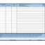

Centennial
| Maps: | Centennial |
| Portal Systems: | D2L |
WINGS |
myUWsys |
 Digital Measures |
| Finance/Reimbursement: |  E-Reimbursement |
 Per Diem Rates |
| MTH 175 | WebWork |
| Copy machine | 10.4.28.133 | SHARP MX-M654N PCL6 | Updated July 2015 |
| Printer by door | 10.4.28.32 | HP LaserJet 600 M602 | |
| Color Printer | 10.4.28.25 | HP Officejet Pro 8500 A909g Series |